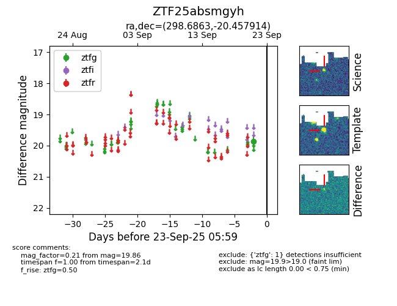

FINK: ZTF25absmgyh
Lasair: ZTF25absmgyh
ALeRCE: ZTF25absmgyh
ZTF25absmgyh (ztf,fink)
equatorial (ra, dec) = (298.6863,-20.45791)
galactic (l, b) = (20.7526,-22.75510)

last ztfg=19.86
1 ztfg detections